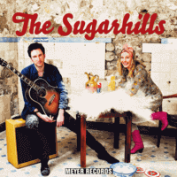

the Sugarhills - The Sugarhills (Album, 2015)
01 - Rock 'N' Roll Queen (1:55)
02 - Scratching Circles (2:18)
03 - She Don't Love You (3:07)
04 - Why (3:58)
05 - Tainted Love (2:16)
06 - Lie On Me (2:32)
07 - Sixteen Tons (2:59)
08 - Single Ladies (3:33)
09 - Unknown Stuntman (2:45)
10 - Rockabilly Music Is Bad (2:37)
11 - Try A Little Bit Harder (3:16)
12 - Mercy (3:21)
© Meyer Records :: [no 204]
Notes
Review
352/366 (Project 366)
Great duo. Man and woman, vocals, guitar, percussion and acoustic power. Also occasionally featured bass and piano by their support artist.
The first song "Rock 'n' Roll Queen" opens a somewhat kitchen rave. Raw and blistering tune. The second track "Scratching Circles" continues dancing hop with rockin' and shakin' groove that are rolled into one smasher. Despite their "acoustic" tone - both first tracks sound powerful, energetic and reasonably lively. And this vibe is much more magical with the third song "She Don't Love You". Cliched tune, but how great it sounds with such an aural mood. Stunning vibe, catchy singing and so vibrant... but tragic, oh tragic. Guitar is so good with this female voice. The next song is "Why", and as with previous song, vocals unfolds so powerfully and strong. There are both (male and female), but lead vocal is by man. Such a somewhat lullaby modern Country Rock-a-Pop. However, just very good and mighty Country Rock song, which sounds delightfully in this concept of the album. The fifth track is "Tainted Love". Is it possible to do a cover version of this song that does not sound amazingly? It is a so hit that has been reimagined, refined and popularized so many times by so many good bands with their alternative view.. that it might just be a pattern. Anyway, the sixth track "Lie On Me" brings back some countrified hard rockin' and rollin' music with slightly honky tonk vibe and with somewhat rebel tune. Then Merle Travis's song "Sixteen Tons" is repainted there from somewhat hillbilly folk to vintage schlager chanson pop with 'midnight' strut rock. Great, actually. The eighth song "Single Ladies" with swampy hard rollin' fancifulness. Then "Unknown Stuntman", rustic rocking ballad with folk vibe tune. Both tracks are full of wonders! The end of the album is superb. "Rockabilly Music Is Bad" (joyful arranged track), "Try A Little Bit Harder" (catchy poppy tune, very scenic), "Mercy" (a bit crazy and wild rockabilly end for such a great recordings; also with a rather high note at the very end).
A very concept album. Very beautiful. Very casual. Very lively. Very rockin'. Very charming. Largely due to this partly acoustic side. And especially because of the beauty of the vocals. And, of course, some positive tone of the sound.